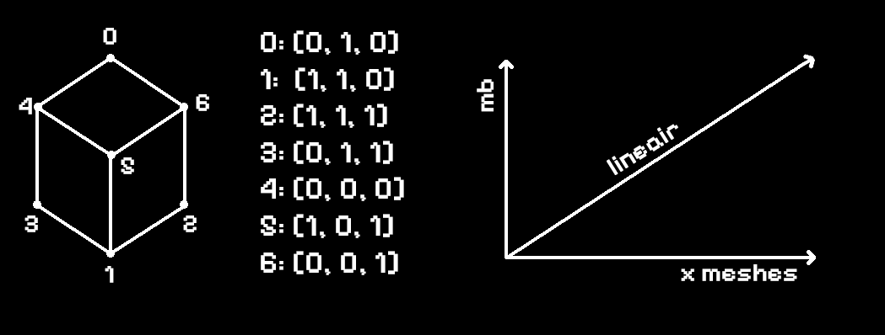
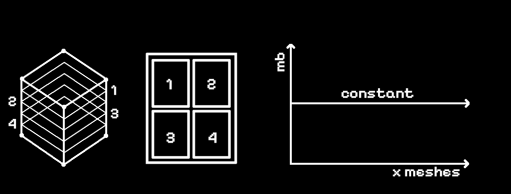

<div class="text_center_fullscreen">
  <div class="home_inner">
    <br>
    <div style="font-size:1.5em;">how?</div>
    <br><br>
    <p>In a traditional 3D object pipeline, prims and points are uploaded. This means that geometric complexity scales with filesize.</p>
    <br><br>
    
    <br><br>
    <p>When processing 3D models through this stacking setup: filesize ≠ geometric detail.</p>
    <p>- only captures 1 dimension/section</p>
    <p>- more complex processing pipeline</p>
    <br><br>
    
    <br><br>
    <p>Limitations are memory and internet speed. But this is far more than the linear approach.</p>
<br>
<br>
  </div>
</div>